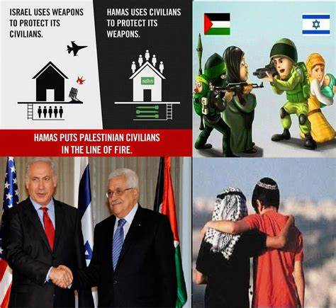

BIENVENIDO
CONFLICTOS EN EL MEDIO ORIENTE
Aqui veras una breve introduccion al tema
UBICACION
El Medio Oriente, una región geográfica ubicada en el cruce de África, Asia y Europa, ha sido durante mucho tiempo un epicentro de tensiones y conflictos. Esta área diversa y rica en historia se ha visto inmersa en una serie de enfrentamientos y disputas que han captado la atención del mundo debido a su impacto global. Los conflictos en el Medio Oriente han sido moldeados por una combinación de factores, que van desde tensiones religiosas y étnicas hasta cuestiones políticas y económicas, creando una trama compleja que ha perdurado a lo largo de décadas.
CONFLICTO ISRAELI-PALESTINO

HAZ CLICK EN LA IMAGEN PARA DESCUBIR MAS
PRINCIPALES CAUSAS

Las dos principales causas del conflicto
en el Medio Oriente son:
Las Diferencias Étnicas y Religiosas
Y Las Disputas Territoriales
PRINCIPALES ACTORES DE LOS CONFLICTOS EN EL MEDIO ORIENTE
HAZ CLICK EN LA IMAGEN PARA DESCUBRIR MAS
CONFLICTOS DESTACADOS

HAZ CLICK EN LA IMAGEN
SOLUCIONES PROPUESTAS PARA RESOLVER LOS CONFLICTOS

HAZ CLICK EN LA IMAGEN
ESTA ES UNA PAGINA WEB DE TIPO ACADEMICA DESARROLLADA CON EL OBJETIVO DE APRENDER HTML. SIN FINES DE LUCRO. CUALQUIER OBSERVACION COMUNICARSE AL CORREO CORREO DE JUANJOMO
go to up go to down